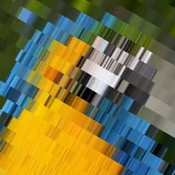

Faixas esticadas

Corta a camada em faixas paralelas e estica uma linha da imagem em cada faixa, como uma digitalização com falhas.
Configurações
| Configuração | Tipo | Intervalo | Padrão |
|---|---|---|---|
| Quantidade | Número | 0 a 500 | 10 |
| Ângulo | Ângulo | -360° a 360° | 45° |
| Fase | Número | -1000 a 1000 | 0 |
| Máscara para a camada | Ativado ou desativado | – | Desativado |
| Alfa | Número | 0% a 100% | 100% |